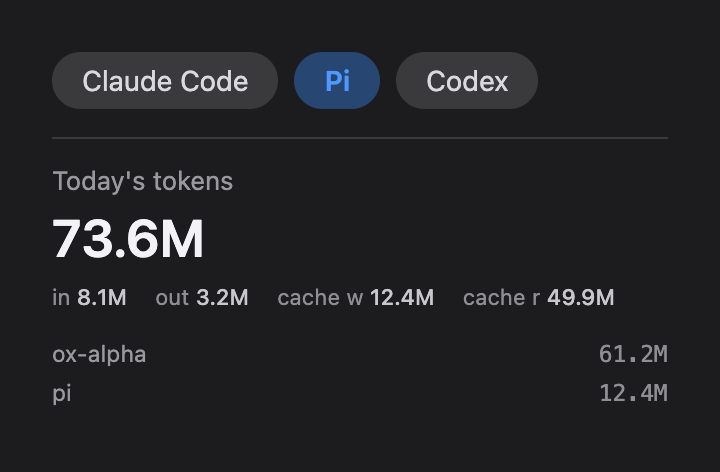
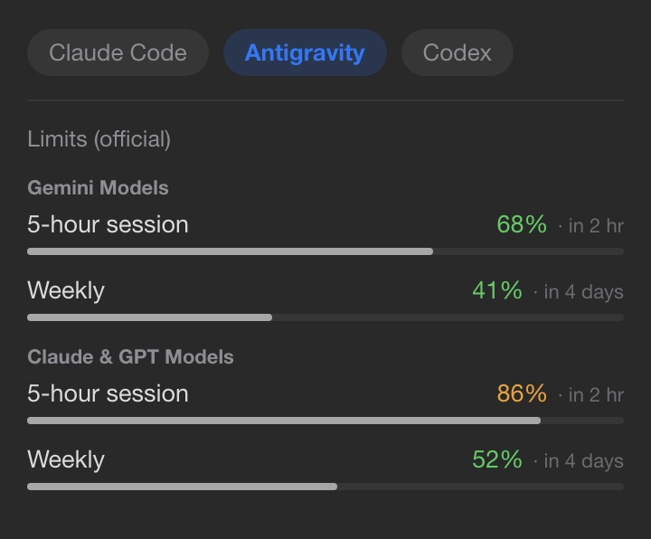
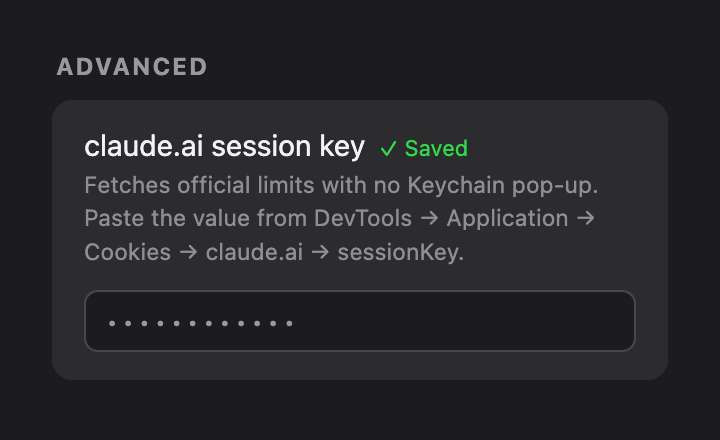
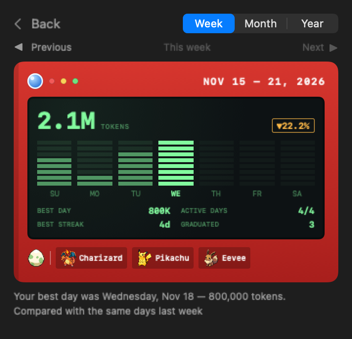
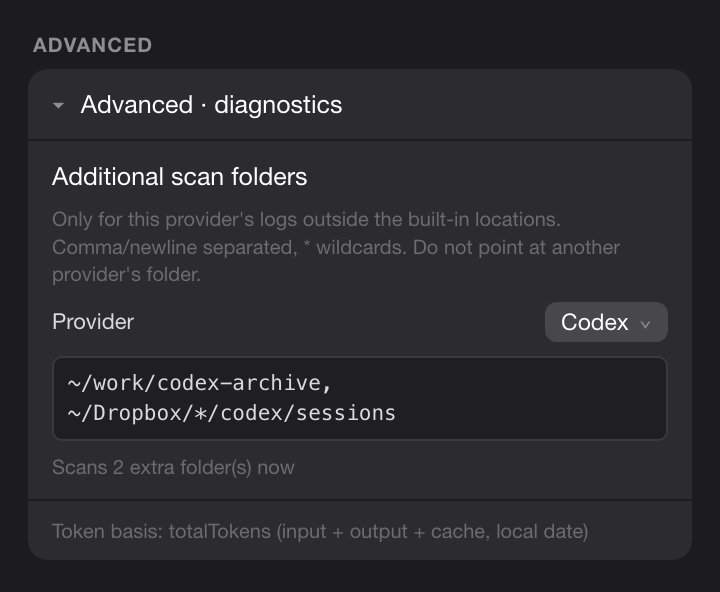
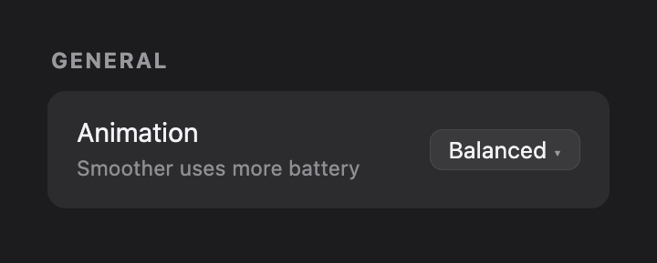

Pick what to track
Turn each tool on or off in Settings. Add scan folders when your logs live outside the default paths.
Today’s tokens, usage trends and provider limits live together. Open the menu bar when you need the details; keep working when you don’t.
The menu bar shows today’s tokens from every tracked tool. Open it for per-tool tabs; Pi usage also splits by model.
Pi can send several models through one session log. Usage goes to the real model id, and a day with several models lists today’s tokens per model, biggest first.

Official Claude, Codex and Antigravity limits, OpenCode Go 5-hour / weekly / monthly allowances, and Grok CLI weekly subscription credits. Availability depends on each tool’s login or subscription.
See official limits with reset times, as used or remaining. Bar colors show your pace, and a forecast says when the 5-hour window reaches 100%.
Reset countdowns include the clock time, and percentages line up on the right. A marker shows how much of the window has passed, and six colors show your pace.


Antigravity reports real quota. Gemini models and Claude & GPT models each get their own 5-hour and weekly buckets with reset countdowns.

Each Claude Code config folder gets its own limits tab. A claude.ai session key reads limits without Keychain prompts. A folder that holds only a credentials file is found too, and a rate-limited account keeps its tab.
Paste a claude.ai session key in Settings → Advanced. Limits then come from claude.ai with no Keychain prompt, and each account can have its own key.
The menu-bar percentage, your partner’s mood and the forecast follow the Claude account you used last. Pick another one in Settings → General.

Pick 7, 14 or 21 days or this month, or click for a 16-week grid. Weekly, monthly and yearly recaps show totals, best days and streaks.
Bars stack by tool when you use more than one. Hover a day for its total and the per-tool split. Quiet days keep your weekly and monthly history.
Hover a recap meter for its date and full token count. One click brings you back to this week, month or year.
A flame marks two or more days in a row. It stays gray until today’s first use extends the streak.



Turn each tool on or off in Settings. Add scan folders when your logs live outside the default paths.
Add scan folders per tool in Settings → Advanced, with * wildcards and a live count of matches. They add to the built-in paths.
Get notified as a limit gets close, and when your partner hatches, evolves or graduates.
The app UI comes in eight languages. Pokémon, type, ability and move names follow your language, with English as the fallback.
Automatic snapshots and corruption recovery, plus manual export and restore in Settings.
Right-click the menu-bar icon for Refresh, Pokédex, Settings and more. Back returns to the page you came from.
Pick 2.5, 5 or 10 fps, or Original, for the menu bar and the floating pet. Low Power Mode caps it.
The app installs new releases of this fork by itself, after checking the download’s checksum, while the popover is closed. Turn it off in Settings → Updates.



Limits depend on your login: official Claude, Codex and Antigravity limits, OpenCode Go allowances and Grok CLI subscription credits. Devin CLI and Kimi Code record no cost, so their cost shows as unavailable.